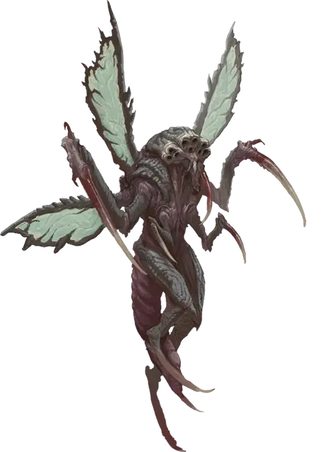

Эмиссар порождений ядра
Core Spawn Emissary
Средняя Аберрация, хаотично-злая

Класс Доспеха 15 (природный доспех)
Хиты 102 (12к8 + 48)
Скорость 40 футов, летая 60 футов (парит)
| мод | спас | ||
|---|---|---|---|
| СИЛ | 17 | +3 | +3 |
| ЛОВ | 15 | +2 | +5 |
| ТЕЛ | 18 | +4 | +4 |
| мод | спас | ||
|---|---|---|---|
| ИНТ | 8 | −1 | −1 |
| МДР | 13 | +1 | +4 |
| ХАР | 8 | −1 | +2 |
Навыки Восприятие +4
Иммунитет к урону психическая энергия
Иммунитет к состояниям ослепление
Чувства слепое зрение 30 футов, пассивное Восприятие 14, чувство вибрации 60 футов
Языки Понимает Глубинную речь, но не говорит, Телепатия 120 фт.
Опасность 6 (2300 опыта)
Бонус мастерства +3
Особенности
Сопротивление магии. Эмиссар совершает с преимуществом спасброски от заклинаний и прочих магических эффектов.
Действия
Мультиатака. Эмиссар совершает три атаки Когтями.
Когти. . Рукопашная атака оружием: +6 к попаданию, досягаемость 5 футов, одно существо. Попадание: 14 (2к10 + 3) рубящего урона.
Манящий гул (перезарядка 5-6). Эмиссар издает ужасный, но в то же время манящий гул. Каждое существо в пределах 20 футов от эмиссара, которое может его слышать и которое не является Аберрацией, должно совершить спасбросок Телосложения Сл 14, иначе станет очарованным на 1 минуту. Существо может повторять спасбросок в конце каждого своего хода, оканчивая на себя эффект в случае успеха.
Кристаллические споры (Перезарядка 6). От эмиссара исходит облако ядовитых кристаллических спор радиусом 15 футов. Споры огибают углы. Каждое существо в этой области должно преуспеть в спасброске Телосложения Сл 14, иначе станет отравленным. Будучи отравленным таким образом, существо получает 11 (2к10) урона ядом в начале каждого своего хода. Существо может повторять спасбросок в конце каждого своего хода, оканчивая на себя эффект в случае успеха.
Описание
Эти летающие хищники служат убийцами и стражами порождений ядра. Ужасный шум его насекомоподобных крыльев и щелканье жвал возвещают о прибытии эмиссара.
Эмиссар порождений ядра может извергать облака кристаллических спор из трубок в своей голове. Эти споры действуют как контактный яд и могут быть смертельными при вдыхании.
Порождения ядра
Древнее Зло нападает на мультивселенную загадочными и разрушительными способами. Иногда они проникают на Материальный план, используя непостижимую энергию и тьму, обитающие в глубинах мира. Эти земные проявления отвратительных инопланетных замыслов известны как порождения ядра, и они столь же разнообразны по своей физиологии, сколь и ужасны.
Их концентрация в пустынных землях Блайтшора делает порождений ядра проблемой для исследований, и многие из тех кто пытался наблюдать или изучать этих кошмарных существ, редко возвращаются. Те, кто все-таки возвращается, часто являются оболочками своих прежних "я", которые говорят об ужасающих подземных лабиринтах извилистых пещер и кошмарных гнездах, куда других обитателей Мискат Стрэнда тащат вниз для какой-то адской цели.
Порождение Катастрофы. Аберрации, известные как порождения ядра, представляют собой подземную породу вестников, слуг, пехотинцев и лейтенантов Древнего Зла, пробужденных в глубинах катастрофическими действиями Богов-Предателей и их приспешников. Они часто появляются на поверхности планеты в результате сейсмических событий, таких как то, что создало бездонную Пропасть Мискат в Восточном Винандире. Колдуны и культисты иногда собираются вместе, чтобы ускорить прибытие порождений ядра на Материальный план, сосредотачивая свою мистическую силу на областях естественной сейсмической нестабильности, когда знаки и звезды правильно выстроены.